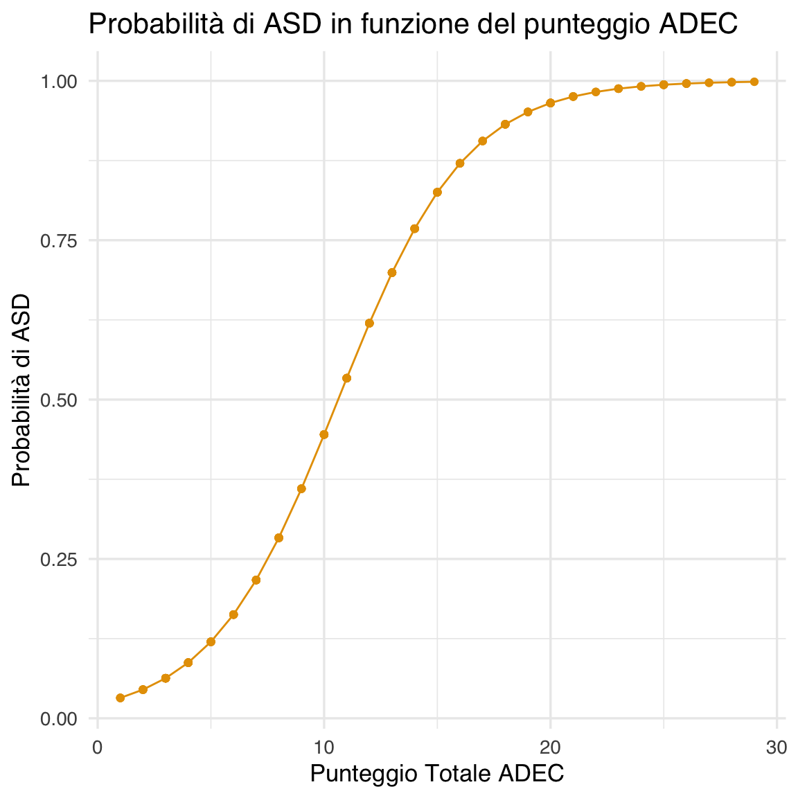
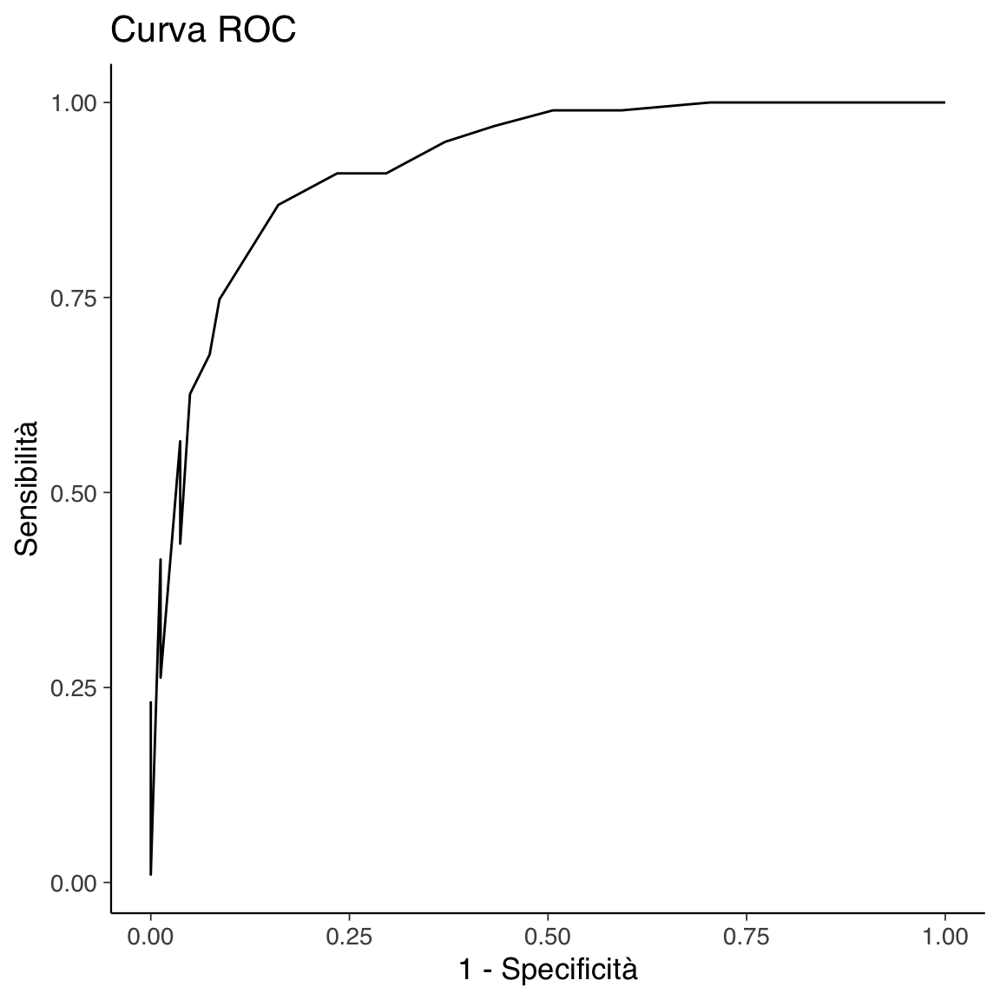
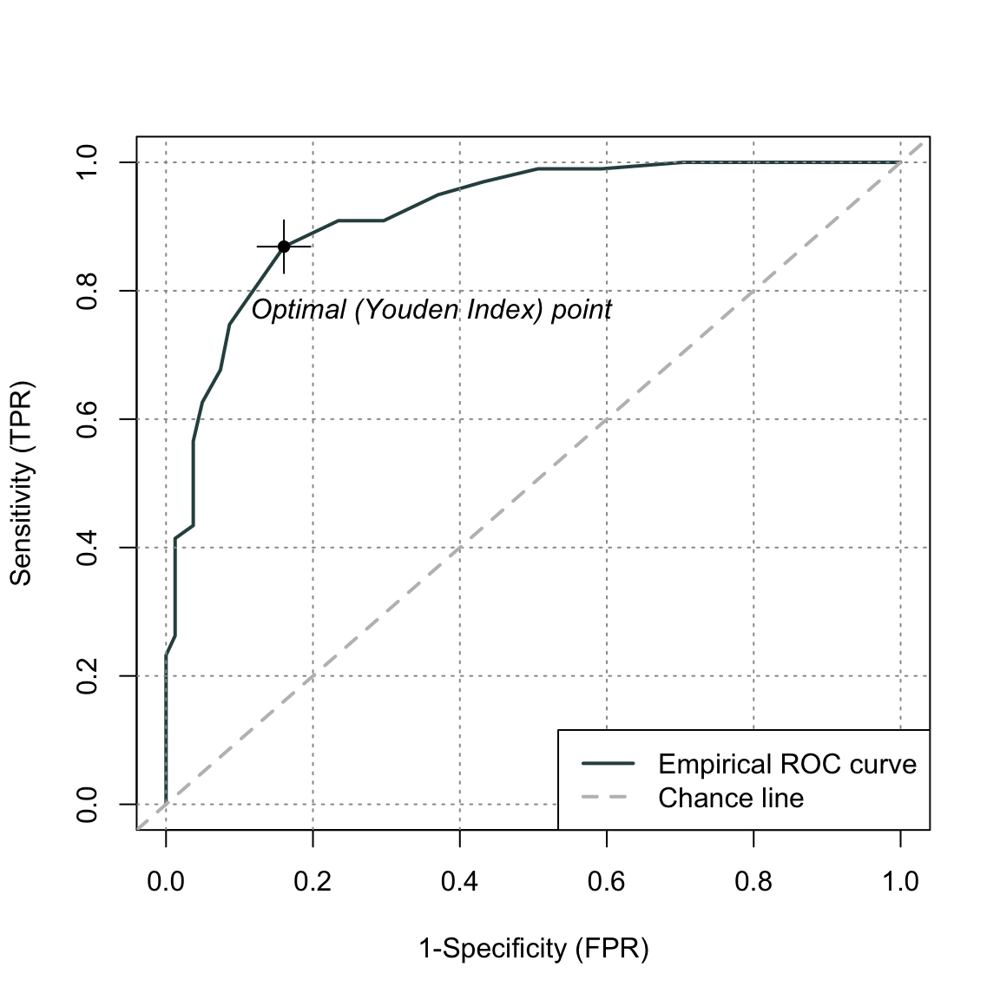

here::here("code", "_common.R") |>
source()
# Load packages
if (!requireNamespace("pacman")) install.packages("pacman")
pacman::p_load(readxl, haven, ROCit, psych, modelsummary)18 Relazioni test-criterio
In questo capitolo imparerai a
- valutare l’accuratezza della classificazione di un test calcolando il punteggio AUC.
Prerequisiti
- Leggere il capitolo Prediction del testo di Petersen (2024).
Preparazione del Notebook
18.1 Introduzione
In questo capitolo, approfondiamo un aspetto specifico della validità già discusso: la relazione tra test e criterio. Per analizzare questo concetto in maniera sistematica, utilizzeremo un approccio quantitativo basato sulla regressione logistica. Questo strumento permette di valutare in modo dettagliato e rigoroso come i punteggi di un test siano correlati o predittivi rispetto a un criterio esterno specifico. Tale analisi offre una comprensione più completa della validità di uno strumento psicometrico, evidenziandone l’utilità pratica e teorica.
In particolare, ci concentreremo sulla capacità dei test di predire o differenziare fenomeni specifici attraverso la Relazione Test-Criterio. L’uso della regressione logistica consente di identificare le relazioni chiave tra le variabili e di quantificare il grado di validità di un test in contesti applicativi, fornendo così uno strumento fondamentale per la valutazione della qualità psicometrica.
18.2 Categorie di Evidenze Basate su Relazioni con Altre Variabili
In psicometria, diverse categorie di evidenze vengono utilizzate per valutare le relazioni tra i punteggi dei test e altre variabili. Tra le principali troviamo:
Relazioni Test-Criterio
Queste analisi si concentrano sull’utilizzo dei punteggi di un test per prevedere il rendimento o lo stato attuale in ambiti specifici, come il successo accademico o lavorativo.Differenze tra Gruppi
Si valuta se i punteggi dei test mostrano differenze tra gruppi definiti da criteri specifici, ad esempio tra individui con e senza una diagnosi clinica.Prove di Convergenza e Discriminazione
Si esplora se i punteggi di un test sono correlati con altri test che misurano costrutti simili (validità convergente) e se sono meno correlati con test che misurano costrutti diversi (validità discriminante).
Un elemento cruciale nelle analisi basate sulle relazioni test-criterio è la selezione di un criterio appropriato e l’adozione di metodi quantitativi per esaminare questa relazione. Quando il criterio è di natura categorica, come il superamento o il fallimento di un esame, la regressione logistica rappresenta una tecnica essenziale.
18.3 Regressione Logistica
La regressione logistica è un metodo statistico utilizzato per analizzare la relazione tra una variabile dipendente binaria e una o più variabili indipendenti. Essa stima la probabilità che un’osservazione appartenga a una determinata categoria della variabile dipendente, sulla base dei valori delle variabili esplicative.
18.3.1 Modellazione della Relazione
Consideriamo una variabile dipendente \(Y_i\), che per ogni osservazione \(i\) (\(i = 1, \dots, n\)) assume due modalità, ad esempio successo e insuccesso. Ogni osservazione è associata a un vettore di variabili esplicative (\(x_1, \dots, x_p\)); per semplicità, analizziamo il caso con una singola variabile indipendente.
Il logaritmo del rapporto di probabilità (odds) tra successo e insuccesso è modellato come funzione lineare del predittore:
\[ \eta_i = \logit(\pi_i) = \alpha + \beta x_i, \]
dove \(\pi_i = Pr(Y=1 | X=x_i)\) rappresenta la probabilità che l’evento \(Y = 1\) si verifichi, dato il valore della variabile indipendente \(x_i\).
18.3.2 Distribuzione e Funzione di Collegamento
Nel caso di osservazioni indipendenti, si assume che \(Y_i\) segua una distribuzione binomiale:
\[ Y_i \sim Bin(n_i, \pi_i), \]
dove \(n_i\) rappresenta il numero di prove per ciascun valore \(x_i\) (pari a 1 per dati individuali). La funzione di collegamento (link function) stabilisce la relazione tra il predittore lineare \(\eta_i\) e la probabilità \(\pi_i\):
\[ \pi_i = \frac{e^{\alpha + \beta x_i}}{1 + e^{\alpha + \beta x_i}}. \]
18.3.3 Applicazioni in Psicometria
Nel contesto dei test psicometrici, la regressione logistica è utilizzata per determinare quanto i punteggi di un test predicano un risultato categorico. Ad esempio, possiamo valutare la probabilità che studenti con determinati punteggi in un test di ammissione universitario abbiano successo accademico nel primo anno.
Questa tecnica consente di:
-
Quantificare la validità predittiva di uno strumento di misura.
-
Identificare soglie critiche nei punteggi che separano categorie di interesse.
- Fornire interpretazioni robuste sull’efficacia del test in contesti pratici.
In sintesi, la regressione logistica rappresenta un potente strumento per esplorare la relazione tra punteggi di un test e criteri esterni, permettendo analisi precise e approfondite. Nel nostro esempio, studiare la probabilità di successo accademico in funzione dei punteggi di un test offre insight pratici e migliora l’affidabilità dell’interpretazione dei risultati psicometrici.
18.4 Un Esempio Pratico
Per illustrare l’applicazione pratica della regressione logistica nella validazione di test psicometrici, analizziamo i dati dello studio Pitfalls When Using Area Under the Curve to Evaluate Item Content for Early Screening Tests for Autism di Lucas, Brewer e Young (2022).
Il campione raccolto da Nah et al. (2018) comprende 270 bambini di età compresa tra 12 e 36 mesi (M = 25.4, SD = 7.0). Secondo la diagnosi clinica effettuata basandosi sui criteri del DSM-5, 106 bambini erano stati diagnosticati con ASD (Autism Spectrum Disorder, disturbo dello spettro autistico), 86 mostravano uno sviluppo non tipico (non-TD), e 78 erano in sviluppo tipico (TD). Per semplicità, considereremo solo i gruppi ASD e non-TD.
Il test in esame è l’Autism Detection in Early Childhood (ADEC), una checklist comportamentale composta da 16 item, progettata per rilevare comportamenti pre-verbali predittivi dell’autismo nei bambini sotto i tre anni (Young, 2007).
18.4.1 Preparazione dei Dati
Iniziamo importando e pre-elaborando i dati. Li scarichiamo da una fonte pubblica, ricodificando le diagnosi per includere solo i gruppi ASD e non-TD.
# Scaricamento e caricamento dei dati
tmp_path <- tempfile(fileext = "xlsx")
download.file("https://osf.io/download/tsm7x/", destfile = tmp_path)
dat1 <- readxl::read_xlsx(tmp_path, na = "NA")
# Ricodifica delle diagnosi
dat1$asd <- recode(
dat1$`Diagnosis(1=Non-typically developing; 2=ASD; 3=Neurotypical)`,
`1` = "Non-TD",
`2` = "ASD",
`3` = "TD"
)
# Filtraggio per escludere il gruppo TD
dat1_sub <- filter(dat1, asd != "TD")Calcoliamo il punteggio totale ADEC per ogni bambino, trattando i valori mancanti in due modi: lasciandoli come NA o considerandoli come 0.
18.4.2 Modello di Regressione Logistica
Vogliamo analizzare come il punteggio totale ADEC sia associato alla probabilità di diagnosi di ASD. Per fare ciò, trasformiamo la variabile diagnostica in un formato binario: 1 per ASD e 0 per non-TD.
# Codifica binaria della diagnosi
dat1_sub$y <- ifelse(dat1_sub$asd == "ASD", 1, 0)Applichiamo la regressione logistica con la funzione glm().
# Rimuovi righe con valori mancanti nei predittori
dat1_sub <- na.omit(dat1_sub)
# Modello di regressione logistica
fm <- glm(y ~ ADEC, family = binomial(link = "logit"), data = dat1_sub)
summary(fm)
#>
#> Call:
#> glm(formula = y ~ ADEC, family = binomial(link = "logit"), data = dat1_sub)
#>
#> Coefficients:
#> Estimate Std. Error z value Pr(>|z|)
#> (Intercept) -3.765 0.581 -6.48 9.0e-11
#> ADEC 0.354 0.052 6.82 9.4e-12
#>
#> (Dispersion parameter for binomial family taken to be 1)
#>
#> Null deviance: 247.73 on 179 degrees of freedom
#> Residual deviance: 131.12 on 178 degrees of freedom
#> AIC: 135.1
#>
#> Number of Fisher Scoring iterations: 618.4.3 Interpretazione e Visualizzazione
Costruiamo un grafico che mostra la probabilità stimata di diagnosi di ASD in funzione del punteggio totale ADEC.
# Probabilità predette
predictions <- predict(fm, type = "response")
plot_data <- data.frame(ADEC = dat1_sub$ADEC, Prob_Y_1 = predictions)# Grafico
ggplot(plot_data, aes(x = ADEC, y = Prob_Y_1)) +
geom_line() +
geom_point() +
xlab("Punteggio Totale ADEC") +
ylab("Probabilità di ASD") +
ggtitle("Probabilità di ASD in funzione del punteggio ADEC")
Il grafico evidenzia una relazione sigmoidale: per punteggi ADEC bassi, la probabilità di ASD è bassa; aumenta gradualmente con l’aumentare del punteggio.
18.4.4 Valutazione dell’Accuratezza del Modello
Per valutare la capacità del modello di distinguere tra ASD e non-TD, utilizziamo una curva ROC (Receiver Operating Characteristic) e calcoliamo l’area sotto la curva (AUC).
# Calcolo della sensibilità e specificità
compute_sens <- function(cut) {
tp <- sum(dat1_sub$ADEC >= cut & dat1_sub$y == 1)
fn <- sum(dat1_sub$ADEC < cut & dat1_sub$y == 1)
tp / (tp + fn)
}
compute_spec <- function(cut) {
tn <- sum(dat1_sub$ADEC < cut & dat1_sub$y == 0)
fp <- sum(dat1_sub$ADEC >= cut & dat1_sub$y == 0)
tn / (tn + fp)
}
cuts <- seq(min(dat1_sub$ADEC, na.rm = TRUE), max(dat1_sub$ADEC, na.rm = TRUE), length.out = 100)
sens <- sapply(cuts, compute_sens)
spec <- sapply(cuts, compute_spec)
# Curva ROC
roc_data <- data.frame(Sensitivity = sens, Specificity = spec)ggplot(roc_data, aes(x = 1 - Specificity, y = Sensitivity)) +
geom_line() +
xlab("1 - Specificità") +
ylab("Sensibilità") +
ggtitle("Curva ROC")
Calcoliamo l’AUC come misura aggregata della capacità discriminativa del modello.
In conclusione, l’AUC calcolata è pari a 0.92, indicando un’eccellente capacità predittiva del test ADEC nel discriminare tra bambini con ASD e non-TD. Questo risultato supporta la validità del test come strumento diagnostico precoce per identificare bambini a rischio di sviluppare un disturbo dello spettro autistico, sottolineandone l’utilità per interventi tempestivi e mirati.
18.5 Utilizzo del Pacchetto ROCit
Il pacchetto ROCit offre un modo semplice ed efficace per calcolare e visualizzare la curva ROC, consentendo di ottenere gli stessi risultati presentati precedentemente con maggiore praticità. Questo pacchetto integra funzionalità per calcolare l’AUC e i relativi intervalli di confidenza, utili per una valutazione approfondita delle prestazioni del modello.
Ecco un esempio di utilizzo con il punteggio totale ADEC:
# Creazione della curva ROC
roc_adec <- rocit(score = dat1_sub$ADEC, class = dat1_sub$asd == "ASD")# Visualizzazione della curva ROC
plot(roc_adec)
È possibile ottenere un riepilogo dettagliato dei risultati:
# Riepilogo dei risultati della curva ROC
summary(roc_adec)
#>
#> Method used: empirical
#> Number of positive(s): 99
#> Number of negative(s): 81
#> Area under curve: 0.9206E calcolare gli intervalli di confidenza per l’AUC:
# Calcolo degli intervalli di confidenza per l'AUC
ciAUC(roc_adec)
#>
#> estimated AUC : 0.920626013218606
#> AUC estimation method : empirical
#>
#> CI of AUC
#> confidence level = 95%
#> lower = 0.880257283328194 upper = 0.960994743109017L’utilizzo di ROCit semplifica il processo di analisi ROC, offrendo funzioni dedicate per la visualizzazione grafica, il calcolo dell’AUC e l’interpretazione dei risultati. Inoltre, la possibilità di includere intervalli di confidenza migliora la robustezza delle conclusioni, fornendo un quadro più chiaro della capacità predittiva del test.
18.6 Riflessioni Conclusive
Questo capitolo ha illustrato l’importanza della regressione logistica e del calcolo della curva ROC, con particolare attenzione all’Area Under the Curve (AUC), come strumenti fondamentali per valutare la validità di criterio di un test psicometrico. In particolare:
-
Regressione logistica: Consente di modellare la relazione tra i punteggi di un test e la probabilità di appartenenza a un gruppo diagnostico, fornendo stime precise e interpretabili.
- Curva ROC e AUC: Valutano la capacità discriminativa del test, permettendo di identificare il trade-off tra sensibilità e specificità in base ai diversi punti di taglio.
Questi strumenti offrono una base solida per l’applicazione pratica del test, garantendo una valutazione accurata della validità di criterio. L’adozione di tecniche statistiche robuste contribuisce a migliorare la qualità delle diagnosi, a supportare decisioni informate e a ottimizzare l’efficacia degli interventi mirati.
In conclusione, la corretta valutazione della validità di criterio è essenziale per garantire risultati affidabili e utili sia nella pratica clinica che nella ricerca. L’analisi presentata in questo capitolo dimostra come l’integrazione di approcci statistici avanzati possa rafforzare la fiducia nell’uso di test psicometrici per la classificazione diagnostica e la progettazione di interventi personalizzati.
Informazioni sull’Ambiente di Sviluppo
sessionInfo()
#> R version 4.4.2 (2024-10-31)
#> Platform: aarch64-apple-darwin20
#> Running under: macOS Sequoia 15.3.1
#>
#> Matrix products: default
#> BLAS: /Library/Frameworks/R.framework/Versions/4.4-arm64/Resources/lib/libRblas.0.dylib
#> LAPACK: /Library/Frameworks/R.framework/Versions/4.4-arm64/Resources/lib/libRlapack.dylib; LAPACK version 3.12.0
#>
#> locale:
#> [1] C/UTF-8/C/C/C/C
#>
#> time zone: Europe/Rome
#> tzcode source: internal
#>
#> attached base packages:
#> [1] stats graphics grDevices utils datasets methods base
#>
#> other attached packages:
#> [1] modelsummary_2.3.0 ROCit_2.1.2 haven_2.5.4
#> [4] readxl_1.4.4 ggokabeito_0.1.0 see_0.10.0
#> [7] MASS_7.3-65 viridis_0.6.5 viridisLite_0.4.2
#> [10] ggpubr_0.6.0 ggExtra_0.10.1 gridExtra_2.3
#> [13] patchwork_1.3.0 bayesplot_1.11.1 semTools_0.5-6
#> [16] semPlot_1.1.6 lavaan_0.6-19 psych_2.4.12
#> [19] scales_1.3.0 markdown_1.13 knitr_1.49
#> [22] lubridate_1.9.4 forcats_1.0.0 stringr_1.5.1
#> [25] dplyr_1.1.4 purrr_1.0.4 readr_2.1.5
#> [28] tidyr_1.3.1 tibble_3.2.1 ggplot2_3.5.1
#> [31] tidyverse_2.0.0 here_1.0.1
#>
#> loaded via a namespace (and not attached):
#> [1] rstudioapi_0.17.1 jsonlite_1.9.0 magrittr_2.0.3
#> [4] TH.data_1.1-3 estimability_1.5.1 farver_2.1.2
#> [7] nloptr_2.1.1 rmarkdown_2.29 vctrs_0.6.5
#> [10] minqa_1.2.8 base64enc_0.1-3 rstatix_0.7.2
#> [13] htmltools_0.5.8.1 broom_1.0.7 cellranger_1.1.0
#> [16] Formula_1.2-5 htmlwidgets_1.6.4 plyr_1.8.9
#> [19] sandwich_3.1-1 emmeans_1.10.7 zoo_1.8-13
#> [22] igraph_2.1.4 mime_0.12 lifecycle_1.0.4
#> [25] pkgconfig_2.0.3 Matrix_1.7-2 R6_2.6.1
#> [28] fastmap_1.2.0 rbibutils_2.3 shiny_1.10.0
#> [31] digest_0.6.37 OpenMx_2.21.13 fdrtool_1.2.18
#> [34] colorspace_2.1-1 rprojroot_2.0.4 Hmisc_5.2-2
#> [37] labeling_0.4.3 timechange_0.3.0 abind_1.4-8
#> [40] compiler_4.4.2 withr_3.0.2 glasso_1.11
#> [43] htmlTable_2.4.3 backports_1.5.0 carData_3.0-5
#> [46] ggsignif_0.6.4 corpcor_1.6.10 gtools_3.9.5
#> [49] tools_4.4.2 pbivnorm_0.6.0 foreign_0.8-88
#> [52] zip_2.3.2 httpuv_1.6.15 nnet_7.3-20
#> [55] glue_1.8.0 quadprog_1.5-8 nlme_3.1-167
#> [58] promises_1.3.2 lisrelToR_0.3 grid_4.4.2
#> [61] checkmate_2.3.2 cluster_2.1.8 reshape2_1.4.4
#> [64] generics_0.1.3 gtable_0.3.6 tzdb_0.4.0
#> [67] data.table_1.17.0 hms_1.1.3 car_3.1-3
#> [70] tables_0.9.31 sem_3.1-16 pillar_1.10.1
#> [73] rockchalk_1.8.157 later_1.4.1 splines_4.4.2
#> [76] lattice_0.22-6 survival_3.8-3 kutils_1.73
#> [79] tidyselect_1.2.1 miniUI_0.1.1.1 pbapply_1.7-2
#> [82] reformulas_0.4.0 stats4_4.4.2 xfun_0.51
#> [85] qgraph_1.9.8 arm_1.14-4 stringi_1.8.4
#> [88] yaml_2.3.10 pacman_0.5.1 boot_1.3-31
#> [91] evaluate_1.0.3 codetools_0.2-20 mi_1.1
#> [94] cli_3.6.4 RcppParallel_5.1.10 rpart_4.1.24
#> [97] xtable_1.8-4 Rdpack_2.6.2 munsell_0.5.1
#> [100] Rcpp_1.0.14 coda_0.19-4.1 png_0.1-8
#> [103] XML_3.99-0.18 parallel_4.4.2 jpeg_0.1-10
#> [106] lme4_1.1-36 mvtnorm_1.3-3 openxlsx_4.2.8
#> [109] rlang_1.1.5 multcomp_1.4-28 mnormt_2.1.1